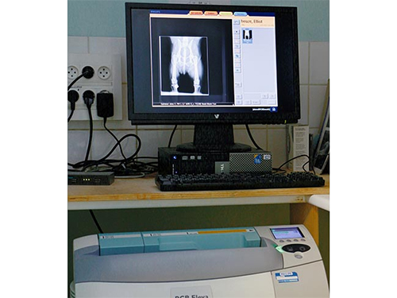

Radiographie numérique et échographie pour un diagnostic précis, dans le respect de la réglementation en vigueur.

La radiographie permet de visualiser le cœur, les poumons, les intestins ou les os. Certains clichés nécessitent une tranquillisation de courte durée car l'animal ne doit pas bouger ; il est alors souvent hospitalisé quelques heures.
Notre salle est équipée d'un appareil de radiologie numérique et des protections réglementaires, contrôlé régulièrement, avec une personne radiocompétente diplômée présente dans la structure.
Totalement indolore, l'échographie visualise les organes internes grâce aux ultrasons. Nos vétérinaires suivent des formations régulières et font appel, pour certains examens spécifiques, à des confrères spécialisés qui se déplacent à la clinique.
Consultations sur rendez-vous · Urgences au 02 31 80 99 00